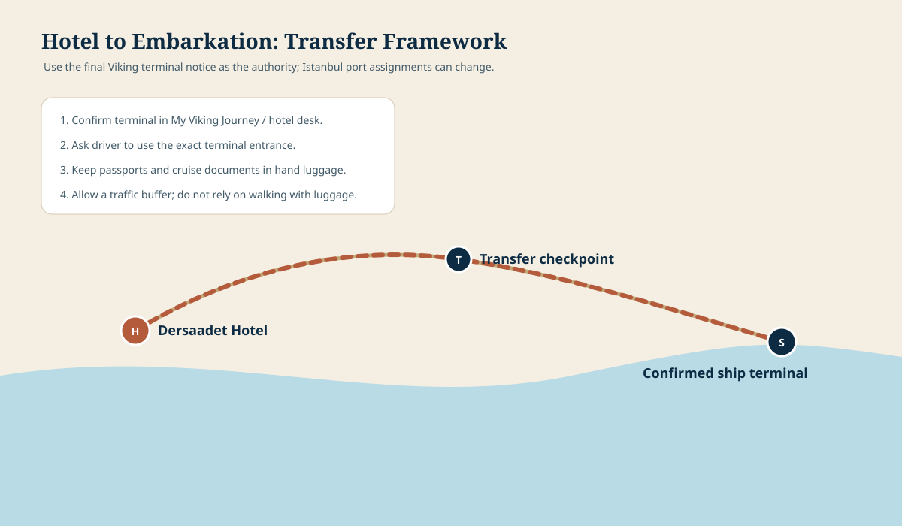

HotelDersaadet Hotel
Stateroom4121 · DV5
PriorityDocuments in hand luggage
VerifyTerminal and transfer time
Before leaving the hotel
Passports and boarding documents
Prescription medication
Phone and charging cable
Credit card and small cash
One change of clothes
Eyeglasses and essentials
Boarding sequence
Finish packing early.
Keep the items you cannot replace in your carry-on, not in checked luggage.
Keep the items you cannot replace in your carry-on, not in checked luggage.
Confirm the terminal.
Use the latest Viking communication or the hotel desk before the car departs.
Use the latest Viking communication or the hotel desk before the car departs.
Check in and board.
Keep passports and booking documents accessible until you are settled.
Keep passports and booking documents accessible until you are settled.
Find stateroom 4121.
Drop carry-ons, locate the safe and identify the nearest stairway.
Drop carry-ons, locate the safe and identify the nearest stairway.
Complete required safety steps.
Follow the ship’s current instructions before exploring.
Follow the ship’s current instructions before exploring.
Orient yourself.
Locate the main lounge, dining venues, elevators, medical center information and your preferred outdoor viewing area.
Locate the main lounge, dining venues, elevators, medical center information and your preferred outdoor viewing area.
Hotel to embarkation

The exact terminal and route can change. Treat this as an orientation diagram and rely on Viking’s final instructions for the destination.
First-hour rule: do the required tasks first, then slow down. You do not need to learn the entire ship on embarkation afternoon.